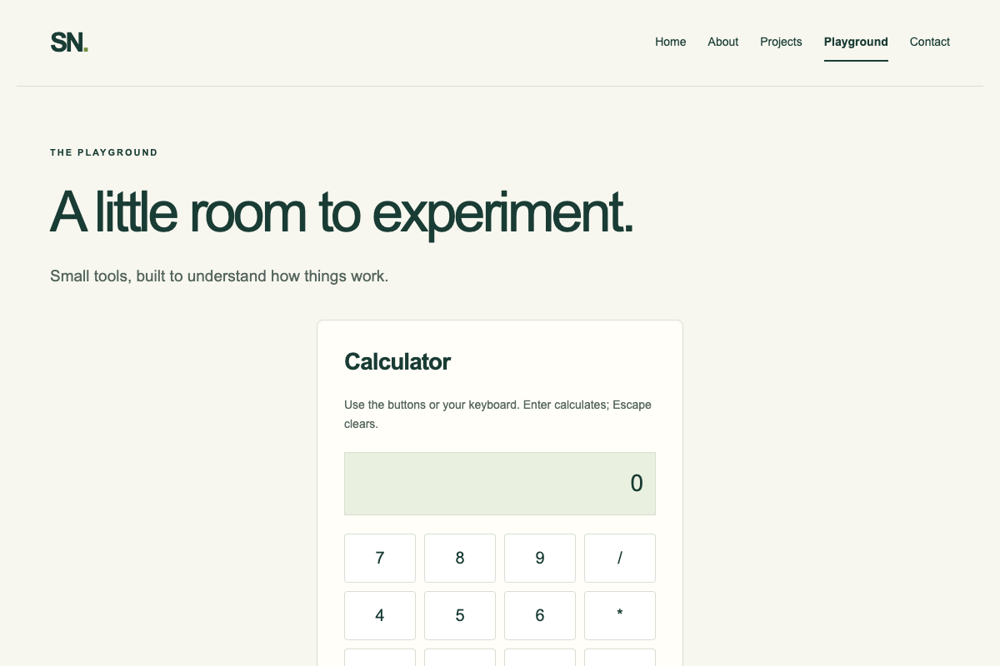

PROJECT NOTES / CALCULATOR
Small tool. Clear behavior.
A browser calculator that makes input, operations, and state visible.

The problem
The original calculator mixed inline handlers and event listeners. It needed predictable input behavior and a usable keyboard path.
The approach
The calculator maintains the current value, previous value, selected operator, and whether the next digit starts a new input. Buttons and keyboard events feed the same input function.
The challenge
Handle repeated decimal points, chained calculations, division by zero, and input after a result. Preserve the native Enter behavior of focused buttons and links.
The outcome
The calculator supports the four basic operations, decimal input, clear, keyboard input, and a readable division-by-zero message.
Scope & next steps
Operations run in entry order, like a basic calculator. It does not implement expression precedence, and results are rounded to 12 significant digits.